Training Module
1. Accessing the Training Module
The Training module can be reached two ways, depending on whether you are assigning/consuming trainings or building them.
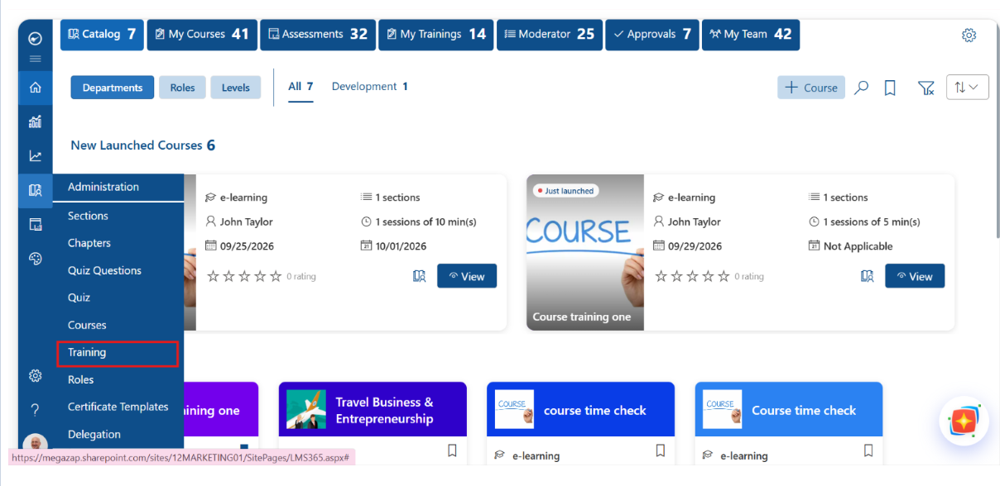
1.1 For Learners — Catalog
The Catalog home page has a row of tabs across the top — Catalog, My Courses, Assessments, My Trainings, Moderator, Approvals, and My Team — each carrying a live badge showing how many items apply to the signed-in user. Selecting My Trainings opens a personal list of every Training the learner has been assigned, together with its status and due date.
Newly published trainings can also surface directly on the Catalog home page — for example, in a “New Launched Courses” carousel — presented as a tile showing the delivery mode, number of sections, contact/instructor, launch and due dates, and current star rating.
1.2 For Administrators — Administration
From the left-hand navigation rail, open the Administration area (the library/book icon). This section groups together Sections, Chapters, Quiz Questions, Quiz, Courses, Training, Roles, Certificate Templates, and Delegation. Selecting Training opens the Training management grid, which lists every training that exists in the tenant.
| Grid Column | What It Shows |
|---|---|
| Training Title | The name of the training. Click the title to open it. |
| Enrollment | Icon showing/managing who is enrolled in the training. |
| Created By | The author's name, photo, and role. |
| Created On | The date the training record was created. |
| Type | Digital Course Training, Live Online Training, or Onsite Training. |
| Status | Draft or Published. |
| Active | Whether the training is currently assignable/visible to learners. |
| Action | Per-row Edit, Archive, and Delete icons — see Section 4. |
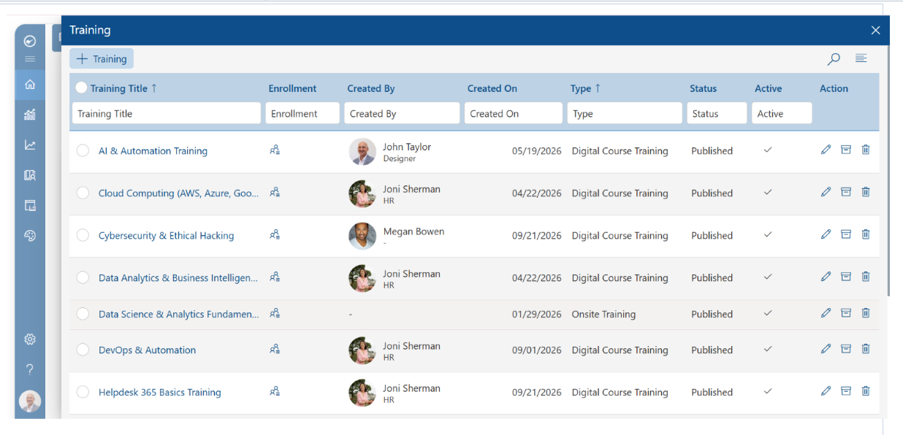
Use the + Training button to start a new training, the search icon to find one quickly, and the filter boxes beneath each column header to narrow the list — handy once the tenant has a large number of trainings.
2. Training Delivery Types
Every training is built as one of three delivery types. The type is chosen when the training is first created and shapes which tools appear later in the build wizard.
| Type | Description |
|---|---|
| Digital Course Training | Fully self-paced, e-learning delivery. One or more existing courses are combined into Course Blocks to form a single training that learners work through online at their own pace. |
| Live Online Training | Instructor-led training delivered virtually at a scheduled date and time — for example, a webinar or virtual classroom session. |
| Onsite Training | Instructor-led training delivered in person at a physical location. It typically carries a start date but no fixed digital due date, since completion is tracked through attendance rather than course progress. |
Note: Course Blocks (Section 3.2) apply specifically to Digital Course Training. Live Online Training and Onsite Training each use their own dedicated tab instead — Section 3.3 and Section 3.4, respectively — to schedule the session. It's best to confirm the Training Type on the Overview tab before building out the rest of the training.
3. Creating a New Training
From the Training grid, click + Training to launch the Add Training wizard. Every training starts on the same Overview tab (Section 3.1), where the Training Type is chosen. Once that choice is made, the rest of the wizard follows one of three paths:
- Digital Course Training — Content → Assessment → Quiz → Preview → Publish (Section 3.2).
- Live Online Training — Live Online Training → Preview → Publish (Section 3.3).
- Onsite Training — Onsite Training → Preview → Publish (Section 3.4).
Progress can be saved as a Draft from almost any tab and finished later. Everything up through Overview is identical no matter which type is chosen — the sections below cover Overview once, then each path in full.
3.1 Overview Tab
- Training Title* — required. A clear, learner-facing name for the training.
- Short Description — a concise one- to two-sentence summary shown on catalog tiles. Use Rephrase with AI to have the system tighten or polish the wording automatically.
- Long Description* — required. The full description shown on the training's detail page; also supports Rephrase with AI.
- Training Type — choose Digital Course Training, Live Online Training, or Onsite Training (see Section 2).
- Training Level, Department, Roles, Skill — optional classification fields used to target the right audience and improve catalog searchability.
- Suggest (AI) — automatically proposes Training Level, Department, Roles, and Skill tags based on the Title and Description already entered, saving manual tagging time.
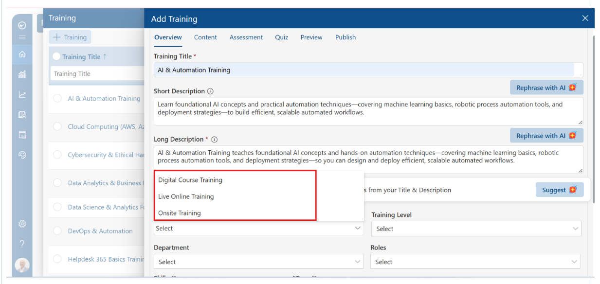
Note: Once Training Type is set here and Next is clicked, the wizard continues into one of the three paths below — Section 3.2 for Digital Course Training, Section 3.3 for Live Online Training, or Section 3.4 for Onsite Training.
3.2 Digital Course Training Path
Selecting Digital Course Training on Overview leads through five more tabs, covered in full below: Content, Assessment, Quiz, Preview, and Publish.
3.2.1 Content Tab — Combining Courses into a Training
This tab is where the defining behavior of Digital Course Training happens: multiple standalone courses are combined into Course Blocks, and together they form one single training that is assigned, tracked, and reported on as a unit.
- Add Courses — under Course Blocks, click Add Courses to open the course picker.
- Course picker — lists every course already in the library (Course Title, Created By, Created On) with a checkbox beside each one, so multiple courses can be selected at once.
- + Course — if the course you need doesn't exist yet, create one on the fly from within this panel without leaving the wizard.
- Sequencing — each selected course becomes a sequential block inside the training; learners move through the blocks in order to complete the overall training.
- Navigation — use Back to return to Overview, Draft to save progress without publishing, or Next to continue to Assessment.
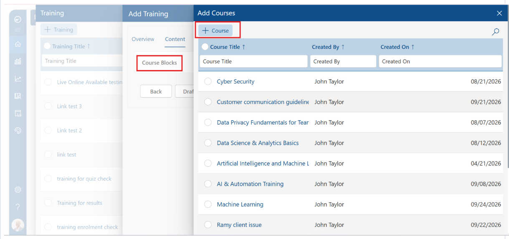
3.2.2 Assessment Tab
Assessments are formal, graded evaluations used to confirm learner understanding at key points in the training.
| Field | Description |
|---|---|
| Assessment Title | The name of the assessment. |
| Assessment Section | The topic area(s) it covers. |
| Assessment Instructor | The reviewer/proctor, assigned via Select Users. |
| Total Question | The number of questions in the assessment. |
| Time Limit | How long learners have to complete it. |
- Generate with AI — drafts assessment content automatically from the training/course material.
- + Add — builds an assessment manually.
- Multiple assessments — a training can carry more than one assessment — for example, a Compliance Knowledge Assessment and a separate Regulatory Standards Assessment covering different topic areas.
- Removing an assessment — use the delete icon in its row at any time.
- Navigation — use Back, Draft, Next, or jump directly to Review & Publish once you're satisfied.
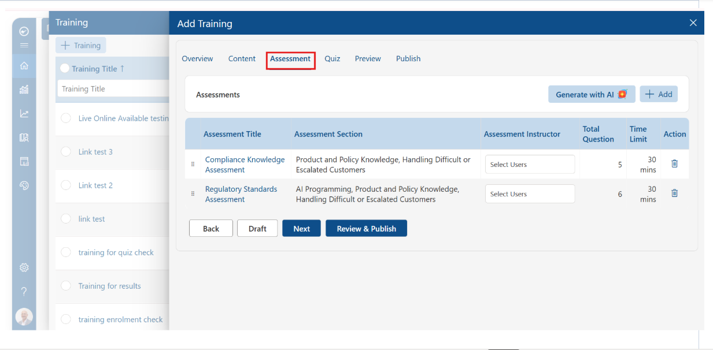
3.2.3 Quiz Tab
Quizzes are lighter-weight knowledge checks, distinct from formal Assessments, used to reinforce learning throughout the training.
- Generate with AI — auto-generates a set of questions for a Question Block.
- + Add — adds a question block manually.
- Rearrange Quizzes — reorders blocks by dragging them into the desired sequence.
- Block detail — each quiz block shows its title and question count (for example, Compliance & Regulatory Awareness with 3 questions, or Java Full Stack Fundamentals with 4 questions) and can be removed with its delete icon.
- Navigation — use Back, Draft, Next, or Review & Publish to continue.
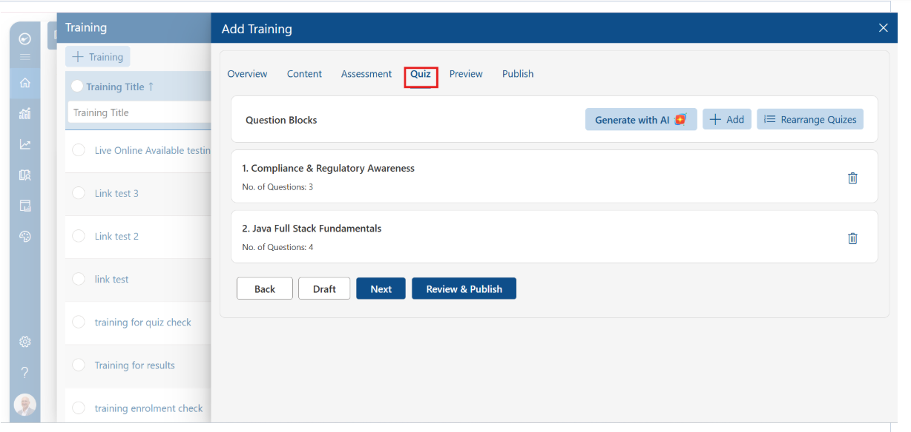
3.2.4 Preview Tab — Thumbnail and Banner Artwork
| Element | Recommended Size / Purpose |
|---|---|
| Thumbnail Image | 200 × 200 px. Used as the training's tile icon throughout the catalog. Upload, Replace, or Remove it here. |
| Banner Image | 1100 × 150 px. Displayed across the top of the training's detail page. Upload, Replace, or Remove it here. |
The right-hand preview panel shows exactly how learners will see the training card, including its Type, Duration (calculated automatically from the total length of its course/session blocks), Contact(s), Start Date, Due Date, and current star rating.
- Card Theme Color — choose Random to let the system assign a background color automatically, or Custom to select a specific brand color for the tile.
- Thumbnail Border — choose No Border for a clean edge-to-edge thumbnail, or Border to frame it.
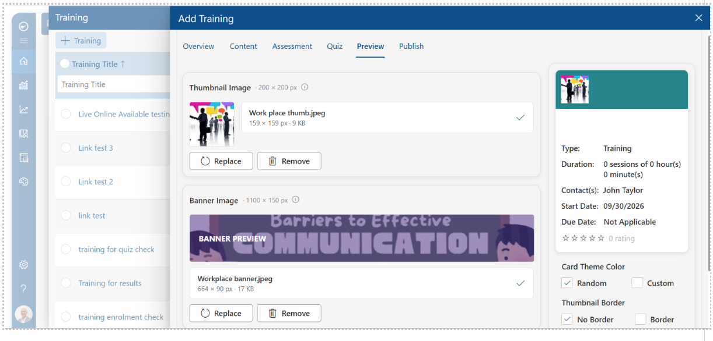
3.2.5 Publish Tab — Final Setup and Going Live
Before publishing, the Publish tab recaps everything configured earlier for a final check: an Assessment Content table (Assessment Title, Assessment Section, Total Questions, Time Limit) and a Quiz Content table (Quiz Title, number of questions, Pass %) for every block attached.
| Setting | Effect |
|---|---|
| Training Author* | Required. The person shown to learners as the training's owner/point of contact (defaults to the creator and can be changed). |
| Training Certification | Toggle on to automatically issue learners a certificate when they complete the training. |
| Certificate Templates* | Required whenever Certification is enabled. Choose the certificate design, or click View Templates to browse the full gallery. |
| Training Rating | Toggle on to let learners rate the training. |
| Rating upon completion | Toggle on to prompt learners for a rating immediately after they finish. |
| Updatable Rating | Toggle on to allow learners to revise a rating they've already submitted. |
| Available for all Users | Toggle on to publish tenant-wide; toggle off to restrict to the audience set on the Overview tab. |
Note: Click Draft to save the training without making it visible to learners, or Publish to make it live and assignable immediately. Both buttons remain available from this tab.
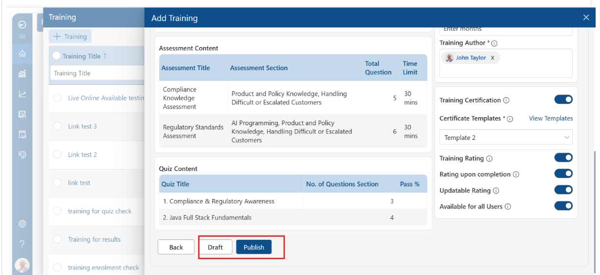
3.3 Live Online Training Path
Selecting Live Online Training on Overview leads through three more tabs, covered in full below: Live Online Training, Preview, and Publish. Content, Assessment, and Quiz don't apply to this type.
3.3.1 Live Online Training Tab — Scheduling a Live Session
This tab replaces Content, Assessment, and Quiz entirely — it's where the virtual session itself is scheduled.
| Field | Description |
|---|---|
| Meeting Type* | Required. Choose how the session will be hosted — MS Teams or Others (a different conferencing platform). |
| Meeting Name* | Required. The name learners will see for the scheduled session. |
| Meeting Description* | Required. Full session details, formatted with the built-in rich-text editor (bold, italic, underline, links, numbered/bulleted lists). |
| Webinar Attachment Type | Optional. Attach supporting webinar material to the session. |
| Attendees* | Required. Choose who can join — All Users, specific Groups, or a Custom selection of learners. |
| Start Date & Time* | Required. The date and time the live session begins. |
| End Date & Time* | Required. The date and time the live session ends. |
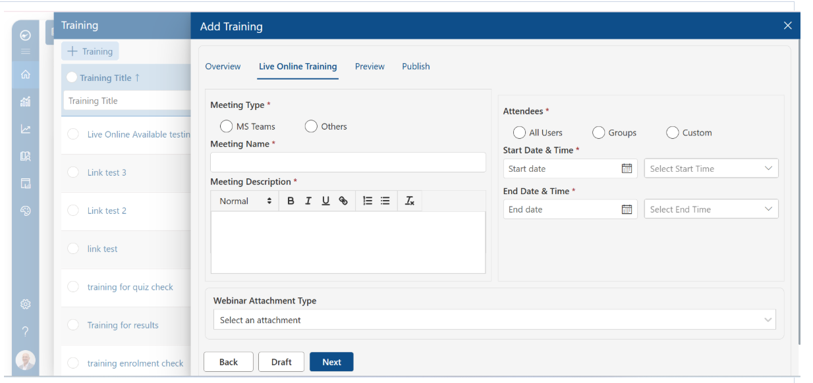
Note: A Live Online Training's build wizard has no separate Assessment or Quiz tab — this one tab covers everything needed to schedule the session.
- Navigation — use Back to return to Overview, Draft to save progress without publishing, or Next to continue to Preview.
3.3.2 Preview Tab — Thumbnail and Banner Artwork
The Preview tab works the same way regardless of Training Type: upload thumbnail and banner artwork and confirm the learner-facing preview before publishing.
| Element | Recommended Size / Purpose |
|---|---|
| Thumbnail Image | 200 × 200 px. Used as the training's tile icon throughout the catalog. Upload, Replace, or Remove it here. |
| Banner Image | 1100 × 150 px. Displayed across the top of the training's detail page. Upload, Replace, or Remove it here. |
The right-hand preview panel shows exactly how learners will see the training card, including its Type, Duration, Contact(s), Start Date, Due Date, and current star rating.
- Card Theme Color — choose Random to let the system assign a background color automatically, or Custom to select a specific brand color for the tile.
- Thumbnail Border — choose No Border for a clean edge-to-edge thumbnail, or Border to frame it.
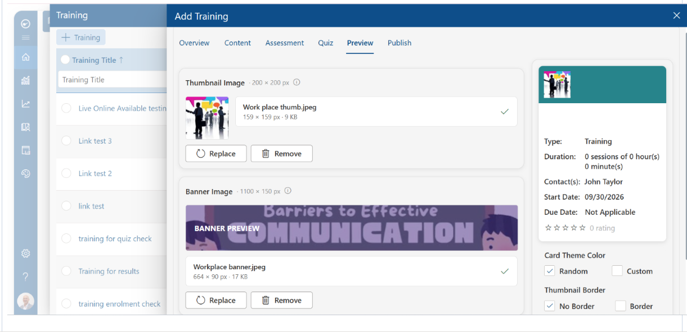
3.3.3 Publish Tab — Final Setup and Going Live
The Publish tab also works the same way regardless of Training Type, recapping everything configured earlier for a final check. Since a Live Online Training carries no Assessment or Quiz blocks, its recap reflects the session and audience details set on the Live Online Training tab instead.
| Setting | Effect |
|---|---|
| Training Author* | Required. The person shown to learners as the training's owner/point of contact (defaults to the creator and can be changed). |
| Training Certification | Toggle on to automatically issue learners a certificate when they complete the training. |
| Certificate Templates* | Required whenever Certification is enabled. Choose the certificate design, or click View Templates to browse the full gallery. |
| Training Rating | Toggle on to let learners rate the training. |
| Rating upon completion | Toggle on to prompt learners for a rating immediately after they finish. |
| Updatable Rating | Toggle on to allow learners to revise a rating they've already submitted. |
| Available for all Users | Toggle on to publish tenant-wide; toggle off to restrict to the audience set on the Overview tab. |
Note: Click Draft to save the training without making it visible to learners, or Publish to make it live and assignable immediately.
3.4 Onsite Training Path
Selecting Onsite Training on Overview leads through three more tabs, covered in full below: Onsite Training, Preview, and Publish. Content, Assessment, and Quiz don't apply to this type.
3.4.1 Onsite Training Tab — Scheduling an In-Person Session
This tab replaces Content, Assessment, and Quiz entirely — similar in spirit to Live Online Training, but tailored for a session held at a physical location.
| Field | Description |
|---|---|
| Meeting Name* | Required. The name learners will see for the scheduled session. |
| Meeting Description* | Required. Full session details, formatted with the built-in rich-text editor (bold, italic, underline, links, numbered/bulleted lists). |
| Location* | Required. The physical venue or address where the session will be held. |
| Attendees* | Required. Choose who can join — All Users, specific Groups, or a Custom selection of learners. |
| Start Date & Time* | Required. The date and time the session begins. |
| End Date & Time* | Required. The date and time the session ends. |
| Block Calendar | Optional toggle. When turned on, reserves this time on attendees' calendars for the session. |
| Attachment Type | Optional. Attach supporting material to the session. |
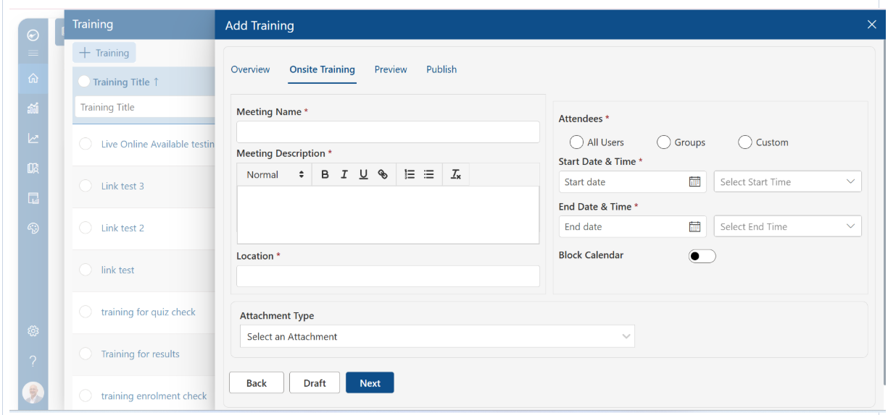
Note: Unlike Live Online Training, there is no Meeting Type selector here since the session happens in person — Location takes its place, and a Block Calendar toggle is available to reserve attendees' time.
- Navigation — use Back to return to Overview, Draft to save progress without publishing, or Next to continue to Preview.
3.4.2 Preview Tab — Thumbnail and Banner Artwork
The Preview tab works the same way regardless of Training Type: upload thumbnail and banner artwork and confirm the learner-facing preview before publishing.
| Element | Recommended Size / Purpose |
|---|---|
| Thumbnail Image | 200 × 200 px. Used as the training's tile icon throughout the catalog. Upload, Replace, or Remove it here. |
| Banner Image | 1100 × 150 px. Displayed across the top of the training's detail page. Upload, Replace, or Remove it here. |
The right-hand preview panel shows exactly how learners will see the training card, including its Type, Duration, Contact(s), Start Date, Due Date, and current star rating.
- Card Theme Color — choose Random to let the system assign a background color automatically, or Custom to select a specific brand color for the tile.
- Thumbnail Border — choose No Border for a clean edge-to-edge thumbnail, or Border to frame it.
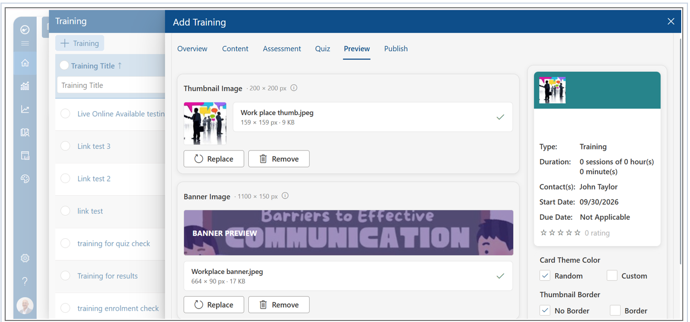
3.4.3 Publish Tab — Final Setup and Going Live
The Publish tab also works the same way regardless of Training Type, recapping everything configured earlier for a final check. Since an Onsite Training carries no Assessment or Quiz blocks, its recap reflects the session and audience details set on the Onsite Training tab instead.
| Setting | Effect |
|---|---|
| Training Author* | Required. The person shown to learners as the training's owner/point of contact (defaults to the creator and can be changed). |
| Training Certification | Toggle on to automatically issue learners a certificate when they complete the training. |
| Certificate Templates* | Required whenever Certification is enabled. Choose the certificate design, or click View Templates to browse the full gallery. |
| Training Rating | Toggle on to let learners rate the training. |
| Rating upon completion | Toggle on to prompt learners for a rating immediately after they finish. |
| Updatable Rating | Toggle on to allow learners to revise a rating they've already submitted. |
| Available for all Users | Toggle on to publish tenant-wide; toggle off to restrict to the audience set on the Overview tab. |
Note: Click Draft to save the training without making it visible to learners, or Publish to make it live and assignable immediately.
4. Managing Existing Trainings
Every existing training can be maintained from the Training grid using the per-row action icons:
- Edit (pencil) — reopens the Add Training wizard with all existing settings, so content, assessments, quizzes, or artwork can be updated at any time.
- Archive (box icon) — retires a training from active use without permanently deleting it or its history.
- Delete (trash icon) — permanently removes the training. This cannot be undone, so archiving is the safer choice if the training may be needed again later.
Use the filter row beneath the column headers — Training Title, Enrollment, Created By, Created On, Type, Status, Active — to quickly search or narrow the list once the tenant has many trainings.
5. End-User Experience
Learners find every training assigned to them under Catalog > My Trainings, where a badge shows the current count. Depending on the Training Type, learners either:
- work through each course block at their own pace (Digital Course Training),
- attend a scheduled virtual session (Live Online Training), or
- attend a scheduled in-person session (Onsite Training).
Any attached Quiz or Assessment must be completed as part of the training. If Training Certification is enabled, learners automatically receive their certificate once all requirements are met — and, if Training Rating is enabled, may be prompted to rate the training, including updating that rating later if Updatable Rating is turned on.
6. Best Practices
- Decide the Training Type first — it determines which content tools apply, so it's best confirmed on the Overview tab before building out the rest of the training.
- Use Draft liberally — save progress from any tab without exposing an unfinished training to learners, and resume later from the Training grid.
- Keep the Short Description tight — it's what appears on catalog tiles, so a concise one- or two-sentence summary reads better than a long paragraph; use Rephrase with AI if it needs polishing.
- Match artwork to spec — following the recommended 200×200 px thumbnail and 1100×150 px banner dimensions keeps tiles and detail pages consistent across the catalog.
- Archive rather than delete — once a training has enrollment history, archiving preserves records and reporting, whereas deleting removes them permanently.
7. Frequently Asked Questions
What's the difference between an Assessment and a Quiz?
Assessments are formal, graded evaluations — each has a defined instructor, question count, and time limit, and can be organized by topic Section. Quizzes are lighter-weight, topic-based knowledge checks built from reusable Question Blocks, used primarily to reinforce learning rather than formally grade it.
Can a single training include more than one Assessment or Quiz?
Yes. Both the Assessment and Quiz tabs support adding multiple blocks, so a training can carry two or more assessments covering different topics alongside two or more quiz blocks.
What happens if I click Draft instead of Publish?
Draft saves everything configured so far without making the training visible or assignable to learners. It remains in the Training grid with a Status of Draft, and can be reopened with Edit at any time to finish and publish it later.
Do I need a Certificate Template if Training Certification is off?
No — Certificate Templates only becomes a required field once Training Certification is toggled on.
Can I attach an Assessment or Quiz to a Live Online or Onsite Training?
Not from the Add Training wizard. Assessment and Quiz tabs only appear when Training Type is Digital Course Training. Live Online Training and Onsite Training each have a single dedicated tab instead, covering meeting or session details, attendees, and scheduling (Sections 3.3 and 3.4).
What's the difference between the Live Online Training and Onsite Training tabs?
They're built the same way, but Live Online Training asks for a Meeting Type (MS Teams or Others) since the session is virtual, while Onsite Training asks for a Location instead and adds a Block Calendar toggle to reserve attendees' time for the in-person session.
8. Learn More
For the full, most current articles and walkthroughs, see the LMS365 Knowledgebase: